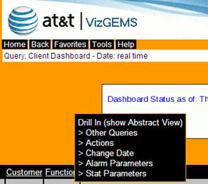
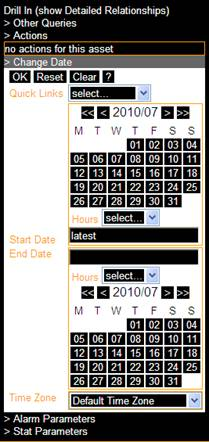
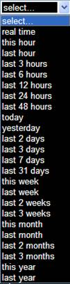

By default, Visualizer displays the most up-to-date data available (midnight to present). The change date action allows you to set specific date ranges for older data. This is useful when researching previous problems or searching for trends in statistical data. Parameters can be set for a specific day, range of dates, or hours within a day.
The Change Date option is available on the drop-down menu as shown below.

Figure 8-4 Change Date Screen
NOTE:
The level of statistical data returned depends on the time span. For small ranges, the raw data collected directly from the devices is displayed. For larger ranges, the data is in hourly totals. For very large ranges, the data is the daily aggregate.
|
 |
 |
Figure 8-5 Change Date Parameters
Use the two calendar sections on the menu to specify exact dates. Click on a date on the top calendar to set the start date. If no end date is specified, the default is the same as the start date. The Hours drop-downs can be used to enter specific start and end hours. If not specified, the start and end hours default to midnight (start hour 00:00 and end hour 24:00).
The following actions are available:
Reset – drops any changes made by the user and reverts to the date range specified for the current page or node.
Clear – removes all field values
OK – gathers the data entered, closes the change date section, and reverts to the full drop-down menu.
? – provides online details about this parameter
Warning! You must click OK in order to apply the entered values to the next query.